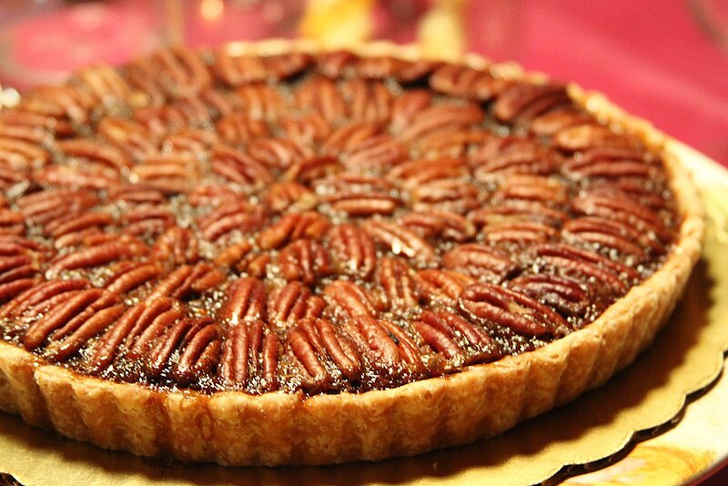

Welcome to my website. Take a look around!
Dewan's Favorite Meals
So as you can see, both of the recipes that I have here are pies, because I really like pie! I hope you do to.
Shepherd's Pie
Shepherd's Pie is a alternative to Cottage Pie. Shepherd's Pie uses ground lamb while Cottage Pie uses ground beef. Serving it with mashed potatoes just makes my mouth water just thinking about it.
Ingredients
Meat Filling
- 4 tablespoons olive oil
- 2 cup chopped yellow onion
- 2 lb. 90% lean ground lamb
- 4 teaspoons dried parsley leaves
- 2 teaspoon dried rosemary leaves
- 2 teaspoon dried thyme leaves
- 1 teaspoon salt
- 1 teaspoon ground black pepper
- 2 tablespoon Worcestershire sauce
- 4 minced garlic cloves
- 4 tablespoons all purpose flour
- 4 tablespoons tomato paste
- 2 cup chicken broth
- 2 cup frozen mixed peas & carrots
- 1 cup frozen corn kernels
Potato topping
- 3 - 4 lb. russet potatoes peeled and cut into 1 inch cubes
- 16 tablespoons unsalted butter
- 2/3 cup half & half
- 1 teaspoon garlic powder
- 1 teaspoon salt
- 1/2 teaspoon ground black pepper
- 1/2 cup parmesan cheese
Instructions
- Add the oil to a large skillet and place it over medium-high heat for 2 minutes. Add the onions. Cook 5 minutes, stirring occasionally.
- Add the ground beef (or ground lamb) to the skillet and break it apart with a wooden spoon. Add the parsley, rosemary, thyme, salt, and and pepper. Stir well. Cook for 6-8 minutes, until the meat is browned, stirring occasionally.
- Add the Worcestershire sauce and garlic. Stir to combine. Cook for 1 minute.
- Add the flour and tomato paste. Stir until well incorporated and no clumps of tomato paste remain.
- Add the broth, frozen peas and carrots, and frozen corn. Bring the liquid to a boil then reduce to simmer. Simmer for 5 minutes, stirring occasionally.
- Set the meat mixture aside. Preheat oven to 400 degrees F.
- Place the potatoes in a large pot. Cover the potatoes with water. Bring the water to a boil. Reduce to a simmer. Cook until potatoes are fork tender, 10-15 minutes.
- Drain the potatoes in a colander. Return the potatoes to the hot pot. Let the potatoes rest in the hot pot for 1 minute to evaporate any remaining liquid.
- Add butter, half & half, garlic powder, salt, and pepper. Mash the potatoes and stir until all the ingredients are mixed together.
- Add the parmesan cheese to the potatoes. Stir until well combined.
- Pour the meat mixture into a 9x9 (or 7x11) inch baking dish. Spread it out into an even layer. Spoon the mashed potatoes on top of the meat. Carefully spread into an even layer.
- If the baking dish looks very full, place it on a rimmed baking sheet so that the filling doesn’t bubble over into your oven. Bake uncovered for 25-30 minutes. Cool for 15 minutes before serving.
Pecan Pie
Pecan Pie is one of my favorite desserts. Its sweet, filling and goes well with whipped cream.
Ingredients
- 1 Pillsbury Pie crust
- 1 cup granulated sugar
- 3 Tablespoons light brown sugar
- 1/2 teaspoon salt
- 1 cup light corn syrup
- 3/4 teaspoon vanilla extract
- 1/3 cup salted butter, softened or melted
- 3 eggs
- 1 1/2 cups pecan halves
Instructions
- Prepare pie crust and place pie dough in an 9 inch pie dish.
- In a large bowl mix together sugar, brown sugar, salt, corn syrup, and softened or melted butter. Mix in the eggs and vanilla.
- Reserve a few pecans and stir the rest into the batter. Pour into unbaked pie shell. Add a few of the reserved pecans on top of the pie in any empty spots, to make it look pretty. Use a small spoon to cover them with batter.
- Bake at 425 degrees for 10 minutes, then lower the oven temp to 350 degrees F and continue baking for about 40 minutes. Check the pie half way through cooking and tent a large piece of greased aluminum foil over the top of the pie. (I tent it high so it doesn't touch the pie filling).
- You will know your pecan pie is done when you can shake it gently and it is not overly jiggly. If it jiggles a lot when shaking, continue cooking until the center is more set, 5-10 more minutes.
- Allow pie to cool completely for several hours before cutting and serving. Or refrigerate for 1-3 days, until ready to serve.
Created by Dewan Singh